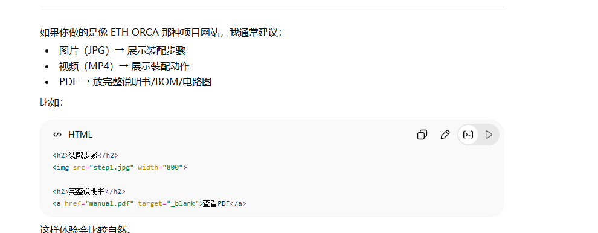

本页面用于展示飞机电源系统相关测试资料， 包括测试图片、第三方测试报告以及频率指标数据， 方便项目组成员进行统一浏览与分享。
下图展示了飞机电源系统测试过程中的关键结果截图。

以下为第三方测试机构出具的正式测试报告， 可在线预览。
原始频率指标数据保存在Excel表格中， 点击下方按钮可下载查看。
本测试数据主要用于分析IDG系统运行状态、 发电频率稳定性以及异常工况特征， 后续将结合健康指标模型开展寿命预测研究。